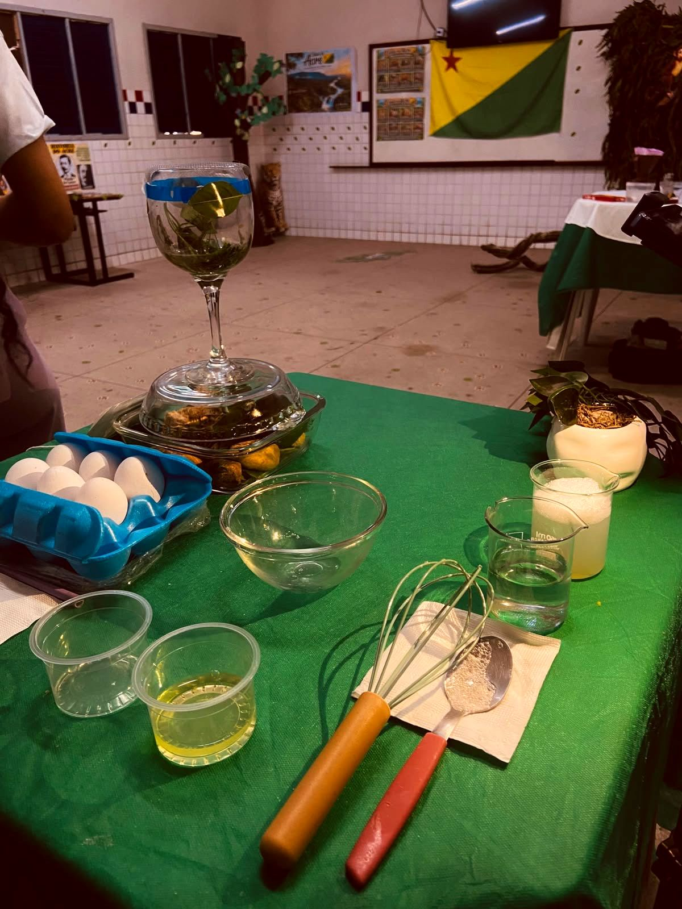
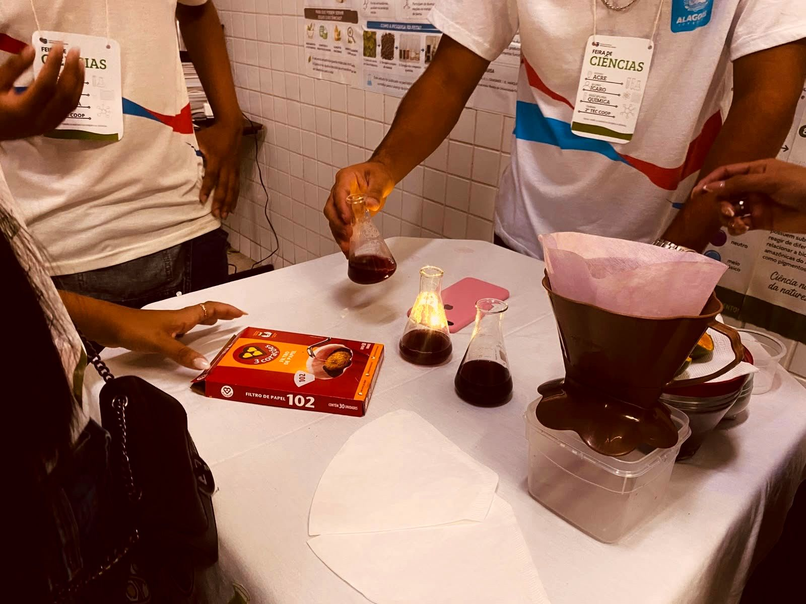

Física
Como ocorre um terremoto
Demonstração de como ocorre um terremoto através de uma maquete explicativa.
Lima Castro Projeto
PIBIC Jr
Feira de Ciências 2026
A turma do 2º Coop A representou o estado do Acre na Feira de Ciências 2026 e apresentou projetos científicos de Física, Química e Biologia, unindo teoria e prática para mostrar como a ciência está presente no nosso cotidiano.

Experimentos
Demonstração de como ocorre um terremoto através de uma maquete explicativa.

Extração dos pigmentos das plantas e utilização de indicadores de pH.
Pigmentos extraídos de folhas nativas da Amazônia.
Cientistas
Cientista citado pela turma.
UFAC · Curso de Física
Doutor em Física e professor do curso de Física da Universidade Federal do Acre (UFAC).
Fotos
Toque em uma foto para ver em tamanho maior.